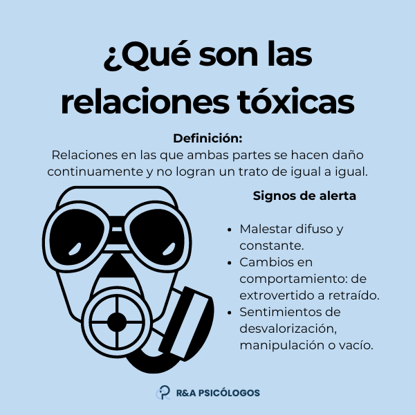

¿Que son las relaciones toxicas?
Las relaciones tóxicas son relaciones en las que ambas partes son incapaces, por alguna razón, de impedir hacerse daño. Puede tratarse de una relación de pareja, pero también de amistad, de trabajo, incluso de una relación familiar. Los signos que deben alertar de que se está en una relación tóxica con frecuencia son indirectos y subjetivos, lo que dificulta a las víctimas de alejarse de la relación tóxica antes de que sea demasiado tarde.
Sin embargo, se recomienda prestar atención cuando se empieza a experimentar un malestar difuso e indescriptible, cuando el comportamiento cambia, por ejemplo de extrovertido pasa a ser retraído, o cuando uno se siente desorientado sin lograr admitirlo; en este momento es importante cuestionarse y hacer un examen de lo que pasa. Lo cual no es sencillo, pues la sociedad en la que vivimos no nos invita realmente a estar atentos a nuestras emociones y a lo que nos ocurre.
Si en la relación en que te encuentras de alguna u otra forma te hace sentir mal, por ejemplo te sientes juzgado, desvalorizado, manipulado, amenazado, acosado, maltratado, o sientes un vacío difuso después de verte con la persona tóxica, si tienes alguno de estos sentimientos, es importante que te preguntes si estás en una relación tóxica y que busques la manera de salir.
Caracteristicas de las relaciones toxicas
En general, las relaciones tóxicas pueden definirse como relaciones en las que ambas partes son incapaces de lograr un trato de igual a igual. Una relación se vuelve tóxica en el momento en que una de las partes "se aprovecha" de la otra, cuando aparentemente solo uno de los dos obtiene un beneficio. Por ejemplo, la persona que actúa viendo únicamente su interés, que se propone manipular e intentar controlar, o que simplemente quiere sacar provecho. Lo que motiva a una persona a tener conductas tóxicas es la voluntad de tener control completo y de tener todo el poder en la relación.
En una relación tóxica el poder no se comparte. Por el contrario, la persona tóxica es aquella que intenta que la otra persona obtenga el mínimo de poder. La toxicidad misma, de hecho, consiste en eso: en implementar dinámicas en las que se genera una desigualdad entre los dos, en la que el poder queda repartido de modo que favorezca a uno y desfavorezca al otro. Si bien las peleas de poder son algo normal en cualquier relación, principalmente en los primeros años del matrimonio, las relaciones tóxicas están caracterizados por la insistencia constante y absoluta de uno de los dos en tener el control.
Generalmente, una relación tóxica se establece entre dos tipos de personas, una persona manipuladora (perverso narcisista), y una persona susceptible a la culpabilidad, sensible y vulnerable, que sufre de dependencia afectiva y que usualmente está volcada a los demás. Cuando dos personas con estas características se encuentran, se produce una especie de red dañina en la que quedan atrapados y de la que es muy difícil salir. Es importante tener presente que los métodos utilizados por una persona tóxica para controlar a su pareja no necesariamente son evidentes ni aparentes, ni siquiera para la pareja víctima.
A continuación describiremos dinámicas presentes en las relaciones tóxicas. En estas, si bien sobresalen las conductas de la persona tóxica, es igual de importante atender y comprender al individuo que recibe el comportamiento tóxico. Es necesario preguntarnos ¿por qué un adulto permanence en una relación que constantemente lo daña emocional y físicamente? ¿por qué no solo soporta conductas dañinas sino que, muchas veces, lucha también por mantener viva la relación?
